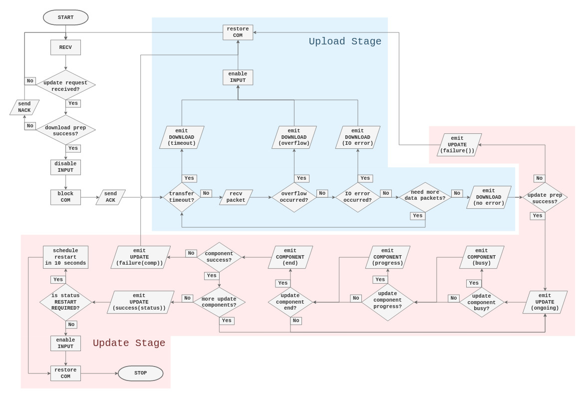

1. Overview
This document describes the live update procedure of the Grayhill Touch Encoder (TE).
1.1 Terminology
- update source - a file distributed by Grayhill for the purpose of updating the whole or part of the Touch Encoder software.
- update component - a single unit the Touch Encoder update procedure acts upon in order to install software. It typically corresponds to a software component of the Touch Encoder. We distinguish the following types:
- Bootloader - a blob used to update the Touch Encoder bootloader.
- Firmware - a blob used to update the Touch Encoder firmware.
- Project - an archive containing the Touch Encoder UI project. This update component is also an update source.
- Package - a container for other update components. This component by nature is also an update source.
- origin - host machine or other entity on the network/bus initiating the live update process.
2. Update Procedure Overview
The following flowchart depicts the update procedure from the perspective of the Touch Encoder.

Note: The live update procedure is divided into two stages, Upload Stage (light blue) and Update Stage (light red). Each of the stages is covered in a greater detail in subsequent sections.
2.1 Upload Stage
Upload stage starts immediately after the live update has been requested and the positive acknowledgment has been sent to the origin. TE assumes a receiver role, disables all input and blocks all other communication. At this time, TE starts accepting data packets that will together compose the update source. The packets are expected to be sent sequentially in-order to yield correct assembly at the destination. The TE relies on the transport layer to guarantee in-order reception.
2.1.1 Failure conditions
Each of the following conditions causes the update procedure to be aborted. At the same time, a Download Status message with appropriate error value is sent to the origin and any following data packets are met with negative acknowledgment.
- timeout - TE allows up to 1000 ms for each consecutive data packet to arrive, therefore a timeout event is raised if a packet is not seen within this window.
- overflow - The exact number of bytes is expected to be received. Uploading more bytes than claimed is an error.
- underflow - Uploading less bytes than the declared amount is a distinct failure condition but the consequence is equivalent to that of a timeout.
- IO error - Any error that TE encounters when assembling the update source.
2.1.2 Success Condition
Occurs when the exact number of bytes have been transferred. The TE emits Download Status with error value of 0 and immediately enters the Update Stage upon successfully completing the Upload Stage.
2.2 Update Stage
Following a successful Upload Stage TE will attempt to use the uploaded file as the update source. At this stage the origin assumes the listener role since the TE will periodically send out status messages as the update process advances. One type of status messages in the Update Stage is Component Status. These messages provide feedback about the specific update component currently being installed. Another type in this stage is Update Status. Such messages, if they contain a non-zero status value, are terminal. Both types are briefly discussed in the following sections.
2.2.1 Component Status Message
The following briefly describes each variant of a component status message: - Component Progress - reports component completion state as a percent value - Component Busy - component is installing but the progress is indeterminate - Component End - component installation has concluded with a specific status code
2.2.2 Update Status Message
As mentioned before, messages of this type mark the end of the update process. The exception to this is the periodically emitted message carrying status value of 0. In all other cases, the status value is used to determine the overall result of the update process. The meaning of each value is given as follows.
- -2 - update failed due to an error in the update component. The exact problem can be identified by investigating the last Component End message.
- -1 - update failed due to an event other than the one captured in status value -2.
- 1 - update procedure succeeded and the changes were already applied.
- 2 - update succeeded but the changes will be applied upon restart.
- 3 - all corresponding components are up-to-date and no update is necessary.
2.3 Post-update
In this stage, there are three possible courses of action. The choice is dependent on the success or failure of the update procedure. Regardless of the course taken, the TE restores all communication.
- Restart - Upon update status value of 2, the TE is set to restart after 10 seconds. With the communication enabled, the origin can issue an immediate restart.
- Fully Operational State - The TE resumes its normal operation as a result of update status value of 3, the up-to-date result. The same is true in case of a failed upload.
- Semi-operational State - This state results from a failed Update Stage. The TE remains with disabled input. With the communication restored, it is possible to reattempt the live update procedure.
3. Transport-specific Items
3.1 SAE J1939
-
Please refer to our SAE J1939 guide in order to learn how to issue the live update request via J1939.
-
For reliable data transfer we require the use of J1939 TP, preferably with the largest possible MTU of 1785 bytes (7 * 255). Using a smaller transmission size has the potential of the overhead dominating the payload and negatively affecting the update process duration.
-
Transferring the entire update source using just CAN datagrams is discouraged. It is extremely prone to errors with both source and destination going out of sync. We cannot make any correctness guarantees with this choice of transport.
3.2 USB HID
- Please refer to our USB HID guide in order to learn how to issue the live update request via USB. The guide also includes descriptions of the two reports being used during the update process.
4. Appendix
4.1 Component Type Values
| Name | Value |
|---|---|
| Package | 0 |
| Bootloader | 1 |
| Firmware | 2 |
| Project | 3 |
4.2 Status Messages
4.2.1 Download Status
| Start | Length | Desc. | Values |
|---|---|---|---|
| 1.1 | 1 Byte | Type | 0x01 - Download Status |
| 2.1 | 1 Byte | Error | 0 - No Error |
| 1 - Unknown | |||
| 2 - Timeout | |||
| 3 - Overflow | |||
| 4 - IO Error |
4.2.2 Update Status
| Start | Length | Desc. | Values |
|---|---|---|---|
| 1.1 | 1 Byte | Type | 0x02 - Update Status |
| 2.1 | 1 Byte | Status | -2 - Update failure (component failure) |
| -1 - Update failure | |||
| 0 - Update Ongoing | |||
| 1 - Update Success | |||
| 2 - Update Success (restart required) | |||
| 3 - Update Success (up-to-date) |
4.2.3 Component Status
-
Component Busy
Start Length Desc. Values 1.1 1 Byte Type 0x03- Component Status2.1 1 Byte Component Type Component Type Value 3.1 1 Byte Component Status 0xB1- Busy4.1 4 Bytes Padding 0x00000000 -
Component Progress
Start Length Desc. Values 1.1 1 Byte Type 0x03- Component Status2.1 1 Byte Component Type Component Type Value 3.1 1 Byte Component Status 0x30- Progress4.1 4 Bytes Progress [0 .. 100] - percent value -
Component End
Start Length Desc. Values 1.1 1 Byte Type 0x03- Component Status2.1 1 Byte Component Type Component Type Value 3.1 1 Byte Component Status 0xF1- End4.1 4 Bytes Status Code Component Status Code
4.3 Component Status Codes
Note: The table below is not comprehensive and contains only the most common codes.
| Value | Description |
|---|---|
0x00000000 |
OK |
0x00000001 |
Up-to-date |
0x00010001 |
Failed opening update source |
0x00020001 |
--- || --- |
0x00050001 |
--- || --- |
0x00010002 |
No project found |
0x00020005 |
File failed validation |